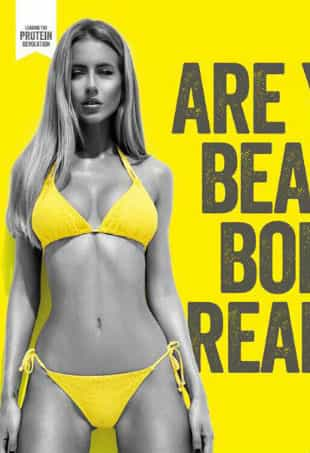
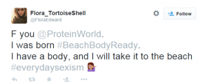
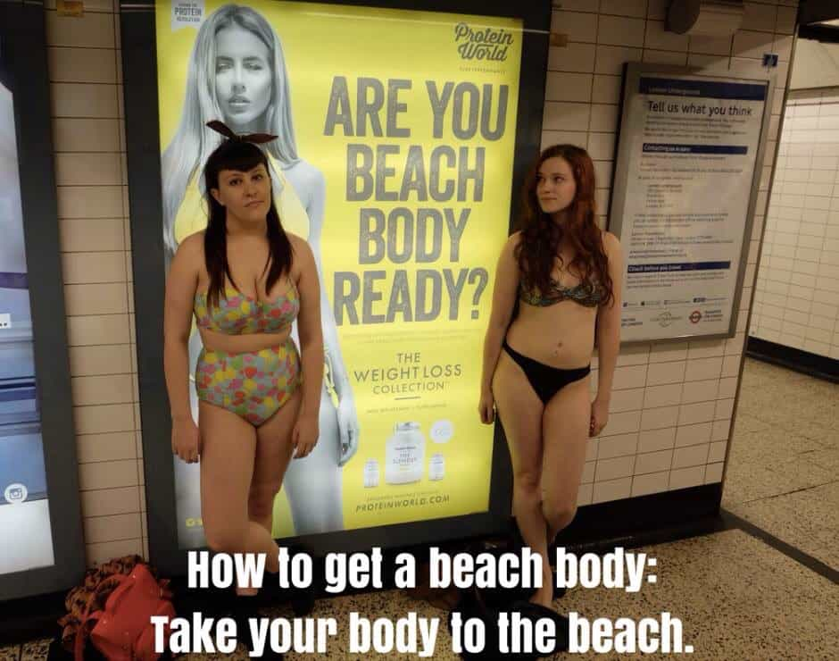
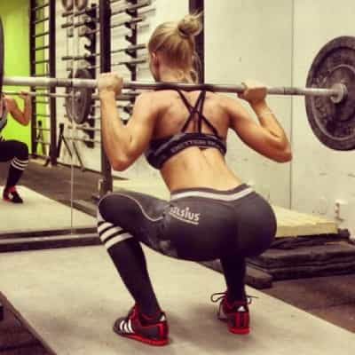
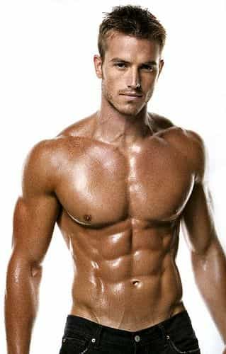
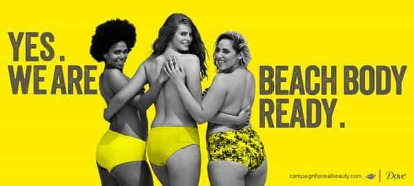

< < < Back
Protein World Enrages Feminists Who Hate Female Beauty – Return Of Kings
Once again feminists are getting their girdles in a bunch over an ad that features an attractive woman. Protein World recently released an ad featuring a scantily clad and attractive female as the poster child to promote their line of weight loss products in advance of summer. This is, of course, the time when most women, fat or fit, go to great measures to ensure their bodies are in top shape to don bikinis on beaches around the world.

Being the petulant children they are, they responded in their typical fit-throwing fashion…again, taking to social media to voice their feelings on this “injussstyyssss!!”…again.

While feminists will never give up the easiest and most effortless way to “protest” a social wrong from the comfort of their cat hair-covered couches, they finally seem to be getting the idea that keystrokes and witty sarcasm doesn’t have the same effect it once did.
So, naturally, they’ve upped the ante on their tactics by vandalizing the ads and posing in bikinis next to them to show what a “real bikini body” should look like.


I’ll give credit where credit is due here. This approach is a hell of a lot more ballsy than the typical campaign against the social injustice du jour—namely attention-whoring cowards posting pictures of their tits for the free the nipple campaign. As Ethan Wolfe correctly stated:
It’s one thing for a young woman to frivolously post topless pictures of her breasts, carefully crafted and sufficiently edited, from within the private, non-threatening environment of her own home; it’s quite another to actively protest perceived oppression by baring her breasts in public.
At least these chicks got out and actually took action of relevance in the public square. That said, these public displays of solidarity against the perceived fat shaming by The Protein World is just another form of attention-whoring under the guise of fighting against body image shaming.
It’s also worth noting that the girl on the right has a half decent body, which you can bet is no accident. If both girls looked like the girl on the left, this little publicity stunt would have fallen flat. Feminists know that beauty sells, whether they publicly admit it or not, which is exactly why this whole shitshow is one giant contradiction in the first place.
So why don’t feminists like attractive women in advertisements? Let’s take a look.
Attractive women represent something they will never be

Even if her face is below average, she’d be attractive
Notice I used the word “attractive” rather than “beautiful” or “gorgeous.” Beautiful women are women who are fit and good looking. These are the females who hit the genetic lottery and didn’t blow all their winnings on junk food and alcohol and have managed to stay in the upper echelon on the sexual market. Basically the 8s, 9s, and 10s of the world.
Attractive women, on the other hand, are girls who weren’t born so lucky. They have average to below average looks but decided to elevate their SMV by hitting the gym, taking care of their bodies, and refraining from gorging pizza and ice cream at 2AM after sucking down girlie drinks all night at the club.
The girl in the ad obviously embodies the best of both worlds, but the issue that really sticks in the craw of feminists and SJWs is her body. They understand that not every girl is born pretty, but they do know that attractiveness is something that can be attained with hard work and discipline.
Feminists are lazy. They have zero interest in doing what it takes to achieve and maintain a bangable body and they know this. They’d rather bitch and moan about not having the time or money to put in the work necessary than get their asses up at 4am to hit the treadmill and do squats.

God forbid they should ever be subjected to this torture
They are acutely aware of this deficiency, so their default setting tells them to resist anything that suggests they might have to actually work to get something they want—like the girl in the ad who shines a bright light on their own sloth.
They are trying to mitigate attraction…

Don’t hate on women who drool over dudes like this
…which simply can’t be done. The West has tried to brainwash men into being attracted to slovenly, unfit women. But no matter how much they try to cram this down our throats, our penises aren’t going to stand at attention in the presence of a fattie.
Ask any girl what her idea of her perfect man is and looks will be in the top three every single time if she’s being honest with you. And guess what…that’s okay! It’s okay to be attracted to attractive men. It’s perfectly natural to want to bear the children of a haw-tee.
But the problem feminists have with this biological need to reproduce with an attractive specimen of the opposite sex is that the pendulum swings both ways. Men have that same (if not stronger) desire to bury our seed in the most attractive females and herein lies their problem.
As men, we have no right to tell women who and what they should be attracted to. Most of us seem to have figured this out as we do our level best to raise our own SMV by lifting weights, learning game, and stacking cash.
Feminists got the same memo, but they’ve chosen to ignore it by attempting to dictate to us what we should be attracted to. And for the most part they’ve been successful. Fatties are praised and exalted as beautiful and and desirable. Men everywhere proclaim their love for “curvy” and “full-figured” women from the highest mountain tops. People who fat shame are struck down with a fury and vengeance the moment they express disdain for rotund versions of the fairer sex.

Unfortunately for them, the one and only true judge of female attractiveness will never be convinced—the boner. Sure, a beta will tell a group of plus-sized females that his woman doesn’t have to be thin or fit or that “big girls need lovin’ too.” But when he goes home alone (which he often does) he ain’t spankin’ that monkey to fat chicks.
In closing
The bottom line here is that not every body is a beach body. Feminists know the score, but they’re trying to fix the outcome of the game and it just doesn’t work that way.
As far as The Protein World is concerned, they seem to have dug in their heels and against the onslaught of this poor attempt at fit-shaming:


Plus, using attractive people has been a staple in the successful marketing of just about every consumer product out there, from clothes to electronics to automobiles. Even fast food joints use good looking people to build their brand.
It wouldn’t make any sense for a company to use land whales to hawk fat burning pills or a male with puny arms to advertise a muscle building compound. Shaming a company for using a proven method to maximize sales is just silly. Expecting them to change it to appease fat girls is flat out idiotic.
Chicks wouldn’t go near this pill if these women were on the bottle
This uproar is just another example of feminist entitlement. They expect men to have washboard abs, make six-figure incomes, and have movie star looks to bang them, but they feel like they shouldn’t have to make any effort to become attractive to men.
This ad makes them uncomfortable because it exposes an undeniable truth to the world (it takes work to be desirable) that glares them right in the face and exposes their flawed ideology.
Congratulations to one company for standing up for the truth.
Read Next: How Feminists Shame Beautiful Women


{kind=link}
{kind=link}
{kind=link}